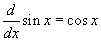
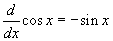
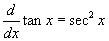
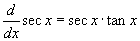
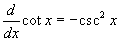
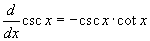

This device cannot display Java animations. The above is a substitute static image
In the above applet, there is a pull-down menu at the top to select which function you would like to explore.
The selected function is plotted in the left window and its derivative on the right. In the left window the red line is the tangent to the curve, indicating the slope at x.
Things to try
- Pick any function from the top pull down, and adjust the x slider so that the red tangent line is horizontal. This corresponds to places where the slope of the line is zero; that is, the rate of change is zero. Looking at the right curve, you will see that the derivative is in fact zero at this value of x, with the small red cross on the x axis.
- Click on "equalize axes". Adjust x so that the line is sloping at 45° up or down. This is a slope of plus or minus 1. Looking at the right graph, this will correspond to points where the derivative has a value of plus or minus 1.
1. Derivative of sin(x)

In the applet above, select 1. Sine in the pull down menu at the top.
The left window shows the function sin(x). On the right is a graph of its derivative, cos(x).
See also definition of the sine trigonometric function.
2. Derivative of cos(x)

.
In the applet above, select 2. Cosine in the pull down menu at the top.
The left window shows the function cos(x). On then right is its derivative, -sin(x).
In fact, both sine and cosine derivatives could be written in terms of sine, since sine and cosine are related by a horizontal shift, but it is customary to define the derivatives as shown.
See also definition of the cosine trigonometric function.
3. Derivative of tan(x)

.
In the applet above, select 3. Tangent in the pull down menu at the top.
The left window shows the function tan(x). On then right is its derivative, sec2(x).
Here, it isn't quite so obvious what the derivative is, but it looks vaguely like the secant function, except that because all of the curves are above the x axis, hence the sec2(x). If you move the x slider, you will see that the slope is always positive (up and to the right), confirming that the derivative must also always be positive.
See also definition of the tangent (tan) trigonometric function.
4. Derivative of sec(x)

In the applet above, select 4. Secant in the pull down menu at the top.
The left window shows the function sec(x). On then right is its derivative, sec(x)·tan(x).
The derivative of sec(x) looks vaguely like tangent, but not quite.
One way to remember these two derivatives is: the derivative of tan x or sec x equals sec x times the other one.
So:
- The derivative of tan x is sec x times sec x (where sec x is "the other one").
- The derivative of sec x is sec x times tan x (i.e., "the other one").
See also definition of the secant (sec) trigonometric function.
5. Derivative of cot(x)

In the applet above, select 5. Cotangent in the pull down menu at the top.
The left window shows the function cot(x). On then right is its derivative, -csc2(x).
The derivative of cot(x) sort of looks like the derivative of tangent, but upside down.
Notice how this is almost the same as the rule for tan(x),
but the right hand side has csc x instead of sec x and also has a minus sign.
If you move the x slider, you will see that the slope of the function is always negative (down and to the right),
confirming that the derivative will always be negative.
See also definition of the cotangent (cot) trigonometric function.
6. Derivative of csc(x)

In the applet above, select 6. Cosecant in the pull down menu at the top.
The left window shows the function csc(x). On then right is its derivative, -csc(x)·cot(x).
This is similar to the rule for sec x, but using csc x and cot x, plus a minus sign.
Notice that all of the derivatives for co-functions (cos, cot, csc) have a minus sign,
while the derivatives for the other three functions (sin, tan, sec) do not.
See also definition of the cosecant (csc) trigonometric function.
Other differentiation topics
(C) 2011 Copyright Math Open Reference.
All rights reserved